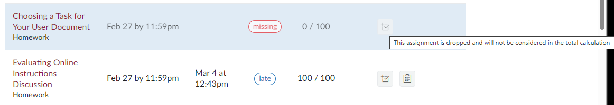

Dropped Homework Grades
This term I am dropping four homework grades in order to help with any week when you were unable to complete work in the course.
Homework That Won’t Drop
These activities won’t drop because they are important to your success in the course OR important to how the course works in the future:
- Semester-Long Topic Test
- Audience Details for the Informational Report
- Informational Report Topic Outline
- Informational Report Audience Analysis
- Letter of Transmittal Draft
- Fact Sheet Audience Analysis
- SPOT Survey Verification
Homework That Will Drop
With the exception of the homework above, your four lowest scores will drop.
To allow you to bring up your average score for homework, there are three optional homework assignments you can complete. You’ll find them in Module 15, for the last week of the class.
Seeing Dropped Grades in Canvas
Dropped grades show in a gray font on the Grades page in Canvas. Grades that are not dropped are in black.
You can also see a pop-up message when you hover your mouse over a dropped grade in Canvas, as shown in Figure 1 below:

In Figure 1, the homework assignment Choosing a Task for Your User Document (the first homework listed) has been dropped. The second homework assignment, Evaluating Online Instructions Discussion, has not been dropped.